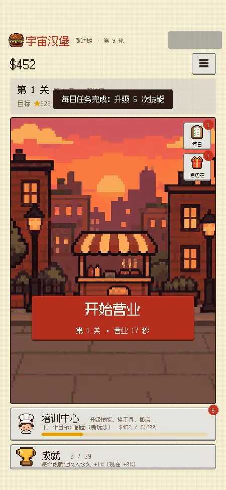

あそびかたHOW TO PLAY
←→移動
Spaceジャンプでブロックを叩く
↓ドアの前で入る
ブロックをクリックでも可
殷 碩 · ゲームプランナー（システム志望）· 復旦大学 修士課程在学中 · インターン募集中
セーブを選択
ジャンプでブロックを叩いても入れます
STATUS
プレイヤーステータス
まず数値で考え、それから形にする。個人で『ナイトレイン』の大型 Mod と Douyin 向けミニゲーム『宇宙バーガー』を制作し、game jam ではメインプランナーを担当。『NARUTO』モバイルと『バトルグラウンド』のシステム分析も書きました。『宇宙バーガー』のゲームテンポも『Tidewheel』の操作猶予も、まずスクリプトでシミュレーションし、データを見て調整しています。
プレイ時間4600h+
プレイ可能な作品3 本
Mod 実機テスト80+ 回
システム分析 2 本80 ページ
LOAD
ロード
セーブデータを選んで再開使用中のスロット 5 / 6
01

ナイトレイン 大型コンテンツ拡張 Mod

ゼンマイ人形 Tidewheel



宇宙バーガー

NARUTO モバイル 成長と経済システム

バトルグラウンド 経済と対戦テンポ
空きスロット
↑↓ 選択 · Enter ロード履歴書を見る ▶